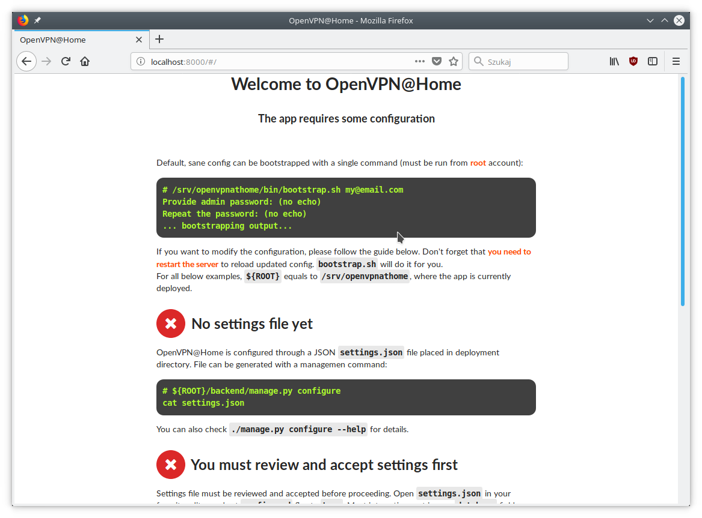
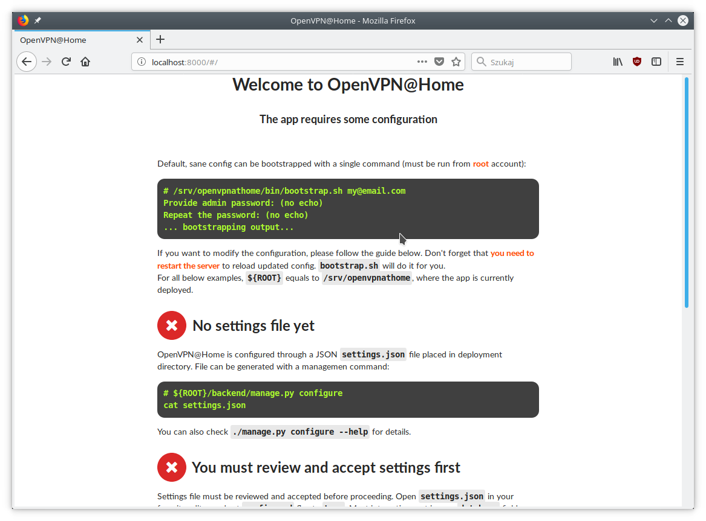

OpenVPN@Home
Legal mumbo-jumbo
© 2002-2018 OpenVPN Inc. OpenVPN is a registered trademark of OpenVPN Inc.
This project is not endorsed by, sponsored or affiliated with OpenVPN Inc.
TL;DR
OpenVPN PKI stuff with Vue.js, Semantic UI and Django. And with love, of course.
 

Feedback and pull requests are welcome.
Brief
Managing OpenVPN with PKI authentication is hard. Managing anything beyond hello-world using easy-rsa package is a major issue - I could never maintain a config for more than a day. Other solutions are too "enterprise" for a personal installation or were designed for a tin-foil hat, crypto maniacs hiding from NSA/GCHQ.
This app provides easy management console to keep OpenVPN configuration files in one place, provided in self-contained, easily deployable, clickable package. It's not designed for security - it's meant just to be good enough.
And that works for me better than "no VPN at all".
Features:
- users with admin/casual privilege separation
- simple user registration
- automatic generation of OpenVPN profiles
- all crypto stuff is inlined into OpenVPN profiles
- profiles can be sent by e-mail or downloaded as files
- Ansible scripts to automatically deploy configured VPN server
- Tested on DigitalOcean's Ubuntu 18.04 droplet
That's all folks. No fancy stuff. It's not a toolbox, it's a screwdriver to manage 3-5 home machines (and phones).
Note
This is a work-in-progress app, hacked together during x-mas break to solve a specific need of mine. Feel free to submit PRs with improvements.
Project structure
The project is split into backend, frontend. and ansible scripts.
The backend is written in Django and Django REST Framework. The frontend is a Vue.js SPA application served by Django. That division makes the build slightly more complicated, but provided Makefiles make it a breeze. It should just work.
Ansible is a set of scripts to deploy OpenVPN automatically either on localhost or remote machine.
Scripts located in bin are created either to automate and facilitate various tasks or provide a glue. All scripts have internal documentation.
Installation
Prerequisites
- Working Node.js installation (tested with 9.2.1 & 9.3.0)
- Python 3 with virtualenv
- GNU Make (or compatible)
- Ansible (tested with 2.5.0, but no fancy functionality is used)
- OpenVPN in ${PATH}
- OpenSSL in ${PATH}
- Internet connection (no off-line build possible)
Deployment
For development
After cloning the repository, you can deploy the app for development with a single command:
$ git clone https://github.com/ezaquarii/openvpn-at-home $ cd openvpnathome $ make devel ... backend is bootstrapped ... ... frontend is bootstrapped ... $ make runserver
Open http://localhost:8001/ and you should be able to log-in.
For production
Production deployment is supported on Ubuntu. Debian should be supported, but I didn't test it there.
$ make deb $ make install_deb
Open http://localhost:8000 and follow on-boarding tutorial.
Note
Building deb package calls make distclean, which will zap your development configuration. Build outside devel environment if you want to preserve your config.
The package needs virtually zero configuration:
- deb is self-deployable
- installs into /srv/openvpnathome (referred to as ${ROOT})
- Python3 virtual environment, static files, etc are all in the deb package
- systemd service script openvpnathome.service is installed and starts by default
- uwsgi runs on http://127.0.0.1:8000
- Contains bootstrapping script to automate app configuration (${ROOT}/bin/bootstrap.sh)
Building a package will call sudo and ask you for a password. Root privileges are required in Python's virtual environment installation step, as we must sudo mount -o bind ... and sudo umount ... virtualenv destination directory. Unfortunately, Python 3 virtualenv relocation is not reliable (and discouraged), so we decided to hack during the build process rather than at runtime. Refer to Makefile install target.
Note
If make deb fails for whatever reason, make sure /srv/openvpnathome is left unmounted.
OpenVPN server deployment
Once the app is up and running, you can log in as admin (using credentials set during bootstrapping phase) and create your server.
After a server is configured, you can deploy it using provided Ansible scripts. Beware that Ansible will modify the target system!
- required packages will be installed
- iptables rules will be altered (using Uncomplicated FireWall - UFW)
- IPv4 forwarding will be enabled (using sysctl.conf)
It is advised to deploy the server on a remote machine, but you can do it on localhost too. I personally test it on DigitalOcean's droplet.
# ${ROOT}/bin/deploy_vpn.sh [local|remote]
Supplying local will deploy the server on localhost. remote will try to deploy on a remote machine using the address provided during configuration.
Note
This feature is work-in-progress.
Configuration
If make devel was run, the app is up and running in development mode with default development configuration:
- Admin login is admin@locahost
- Admin password is admin1234
- Database is located in ${PROJECT_ROOT}/db/db.sqlite3
- Settings have development flag set to true true
App config
Configuration is loaded from settings.json located in deployment directory. The settings file is generated during a bootstrap stage, so there is no need to generate it manually. However, should you need to generate the script during development, you can do it with a supplied Django management command:
$ ${ROOT}/bin/manage configure [--accept] [--devel] [--help] [--force]
Once the file is generated (ie. after bootstrap), you must review and accept it by flipping the configured flag inside.
Note
settings.json is excluded from Git repository, so you can safely put your real e-mail credentials there during development.
You can also access Django Admin app, which is left enabled.
OpenVPN config
OpenVPN configuration is generated from templates in openvpnathome.apps.openvpn.templates. If the default configuration doesn't suit your needs, you can alter templates directly there.
There is no frontend config editor, although I was thinking about it.
Development
Want to jump in? Fantastic.
I made it as easy to start development as possible. Top-level project directory contains 2 subprojects: backend and frontend.
Top-level Makefile delegates targets to sub-projects and is provided for convenience. Once make devel is done, you can work inside individual subproject with your favourite IDE.
I personally use JetBrains WebStorm and PyCharm, but you can use whatever you want. IDE files are not even in the repo.
Backend subproject
This is the Django app. Mostly REST API + single frontend serving view. App modules have brief documentation inside __init__.py. Docs are kept up-to-date, as I strongly believe in code documentation.
Provided Makefile's default target displays help:
$ make Welcome to OpenVPN@Home make system Available targets: * devel - boostrap project for development (your first choice) * virtualenv - install virtual environment and all dependencies * runserver - start development server * test - run full test suite
In development mode, frontend files are stored outside of this project, in frontend subproject. Django app will pick static and templates from frontend build directory.
When development mode is off, frontend resources are taken from openvpnathome.apps.frontend app.
Django Debug Toolbar is provided by default, should you need to check which templates are picked up.
Frontend subproject
Frontend sub-project contains Vue.js SPA served by Django.
Provided Makefile's default target displays help:
$ cd frontend $ make Welcome to OpenVPN@Home make system - frontend sub-project You need running node.js and npm. Available targets: * build-prod - build production build; backend project is NOT updated * build-devel - watch and make development build on change; output is written to './dist' * install - install packages from package.json * distclean - clean project, delete all data (start from 'git clone' state)
This is pretty self-explanatory too. When developing front-end code, you run Django app in development mode, and make build-devel.
Django will pick frontend code from frontend/dist directory.
Django injects some initial state via <script>...</script> tag. See index.html and openvpnathome.apps.frontent.views for details.
Licence
GNU GPL v3.
Known issues
I left this as the last point, hoping not to scare anybody.
- only one sever can be managed (I don't need more for now)
- frontend has 0% test coverage and many lint issues :o)
- security is not a major concern for this app, I'm not running a CA company
- no real user management - I rely on Django Admin panel for it
- not tested on Windows, as I don't touch it even with a 10-foot stick, in rubber gloves - patches are welcome, however
- no cert revocation (yet)
- strike: no automatic OpenVPN configuration- Ansible script is provided